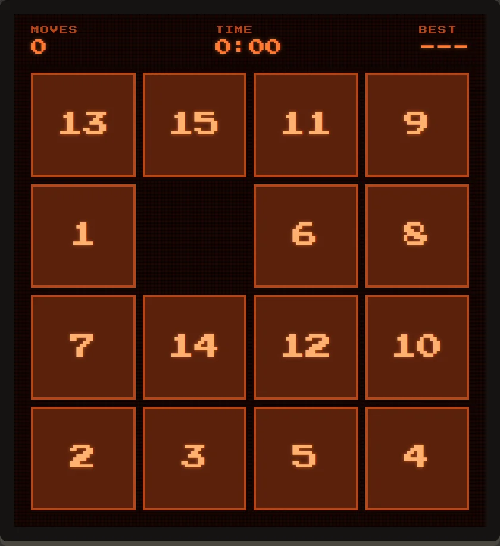
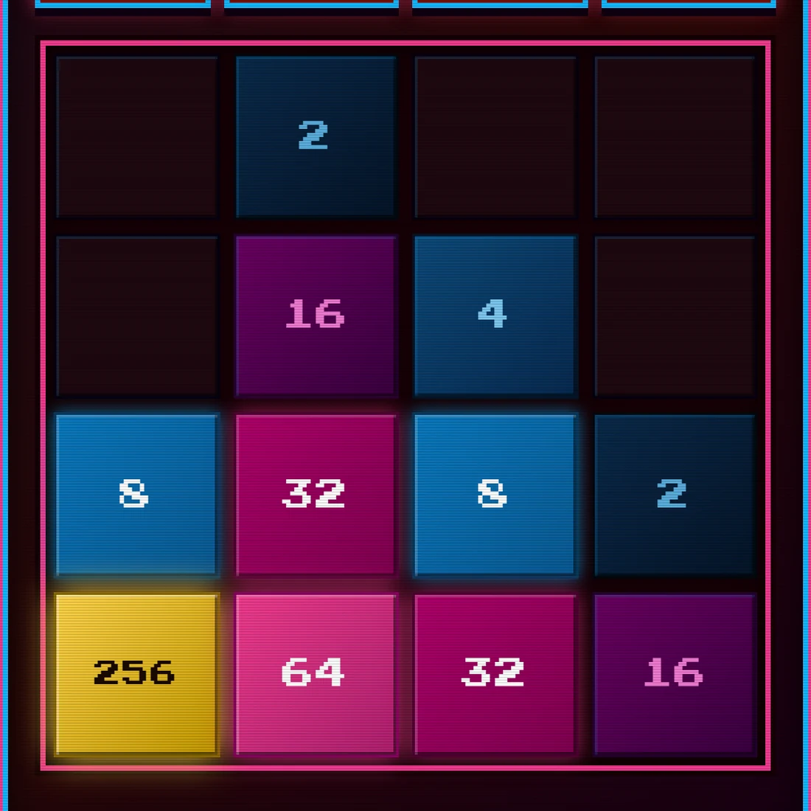
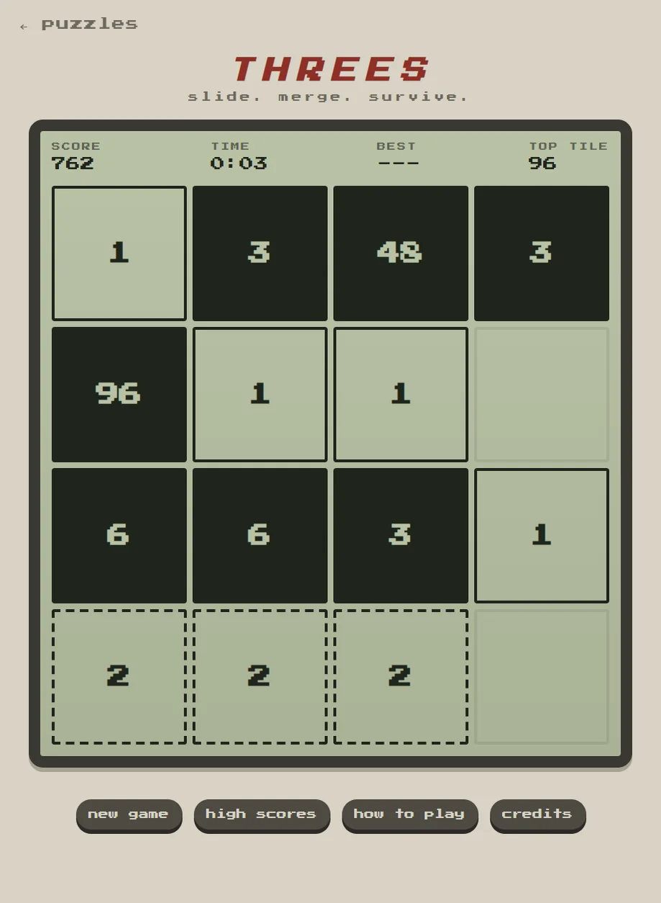
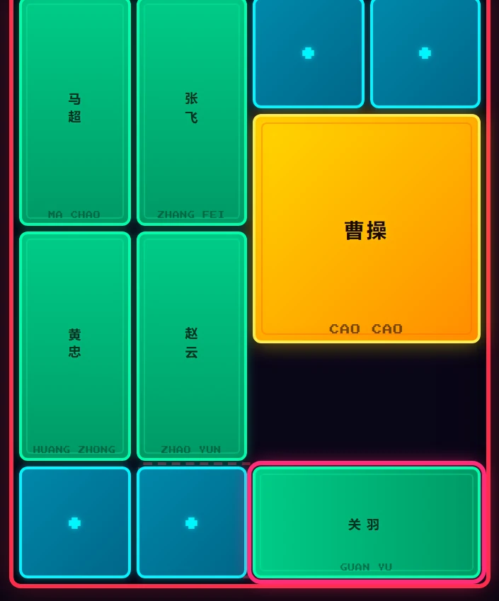

four sliding puzzles · browser & terminal
Small puzzles, each a classic or close to one: slide the tiles into order, merge them up, or work a block out of a tray. All four play free in the arcade with arrow keys or swipe, and three of them run in a terminal too.

fewer moves is better
The classic sliding tile puzzle: slide the numbered tiles back into order. Boards run from the 8 puzzle on three by three up to six by six, with four by four as the default. Your score is your move count.
original concept the 15 Puzzle, attributed to Noyes Chapman (1870s) · cheapness impact factor 1.1

2048 with a target you choose
2048, generalised. Pick your target, from 2-bit mode at 4 up to 16-bit mode at 65,536, or play endless, with 2048 as the default. Slide and merge powers of two while the tiles heat from icy blue to white hot.
original concept 2048 by Gabriele Cirulli (2014). An unofficial take, not affiliated with or endorsed by its author. · related George Boole Has Entered The Chat, the same idea in Boolean logic · cheapness impact factor 2.2

ones and twos make three
Slide every tile at once. 1 and 2 make 3, and from there only matching tiles merge. New tiles come in from the edge you slid away from, and your score is the sum of every merge. Most new tiles are 1s, so a run lasts a few dozen moves.
original concept Threes! by Sirvo (Asher Vollmer, Greg Wohlwend and Jimmy Hinson). An unofficial take, not affiliated with or endorsed by Sirvo. · cheapness impact factor 2.1

横刀立马 · slide the general to the exit
Slide Cao Cao, the gold two-by-two block, past his generals and soldiers and out of the four-by-five board. Pieces only slide, never jump. The text is in Chinese, English or both.
original game Klotski (横刀立马), a traditional Chinese sliding block puzzle from the early twentieth century · cheapness impact factor 1.0
New to pipx? The terminal arcade page walks through installing it. The three terminal versions are also in the magmacrunch terminal arcade.
versions by magmacrunch media